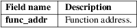
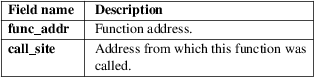
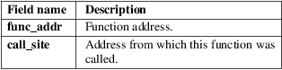

lttng-ust-cyg-profile − Function tracing (LTTng−UST helper)
Compile your application with compiler option -finstrument-functions.
Launch your application by preloading liblttng-ust-cyg-profile-fast.so for fast function tracing:
$ LD_PRELOAD=liblttng−ust−cyg−profile−fast.so my−app
Launch your application by preloading liblttng-ust-cyg-profile.so for slower, more verbose function tracing:
$ LD_PRELOAD=liblttng−ust−cyg−profile.so my−app
When the liblttng-ust-cyg-profile.so or the liblttng-ust-cyg-profile-fast.so library is preloaded before a given application starts, all function entry and return points are traced by LTTng−UST (see lttng-ust(3)), provided said application was compiled with the -finstrument-functions compiler option.
See lttng(1) to learn more about how to control LTTng tracing sessions.
Function tracing with LTTng−UST comes in two flavors, each one providing a different trade−off between performance and robustness:
liblttng-ust-cyg-profile-fast.so
This is a lightweight variant that should only be used where it can be guaranteed that the complete event stream is recorded without any missing events. Any kind of duplicate information is left out.
At each function entry, the address of the called function is recorded in an LTTng−UST event. Function exits are recorded as another, empty LTTng−UST event.
See the Fast function tracing section below for the complete list of emitted events and their fields.
liblttng-ust-cyg-profile.so
This is a more robust variant which also works for use cases where events might get discarded, or not recorded from application startup. In these cases, the trace analyzer needs extra information to be able to reconstruct the program flow.
At each function entry and exit, the address of the called function and the call site address are recorded in an LTTng−UST event.
See the Verbose function tracing section below for the complete list of emitted events and their fields.
Usage
To use LTTng−UST function tracing, you need to make
sure the sources of your application are compiled with the
-finstrument-functions compiler option.
It might be necessary to limit the number of source files where this option is used to prevent excessive amount of trace data to be generated at run time. Usually, there are additional compiler flags that allow you to specify a more fine−grained selection of function instrumentation.
For each instrumented function, the executable will contain calls to profiling function hooks (after function entry, named __cyg_profile_func_enter(), and just before function exit, named __cyg_profile_func_exit()).
By preloading (using the LD_PRELOAD environment variable) one of the provided shared libraries, these profiling hooks get defined to emit LTTng events (as described below).
Note
Using this feature can result in a massive amount of
trace data to be generated by the instrumented application.
Application run time is also considerably affected. Be
careful on systems with limited resources.
Fast
function tracing
The following LTTng−UST events are available when
using liblttng-ust-cyg-profile-fast.so. Their log
level is set to
LTTNG_UST_TRACEPOINT_LOGLEVEL_DEBUG_FUNCTION.
lttng_ust_cyg_profile_fast:func_entry
Emitted when an application function is entered, or more specifically, when __cyg_profile_func_enter() is called.
Fields:

lttng_ust_cyg_profile_fast:func_exit
Emitted when an application function returns, or more specifically, when __cyg_profile_func_exit() is called.
This event has no fields. Since the liblttng-ust-cyg-profile-fast.so library should only be used when it can be guaranteed that the complete event stream is recorded without any missing events, a per−thread, stack−based approach can be used on the trace analyzer side to match function entry and return events.
Verbose
function tracing
The following LTTng−UST events are available when
using liblttng-ust-cyg-profile.so. Their log level is
set to
LTTNG_UST_TRACEPOINT_LOGLEVEL_DEBUG_FUNCTION.
lttng_ust_cyg_profile:func_entry
Emitted when an application function is entered, or more specifically, when __cyg_profile_func_enter() is called.
Fields:

lttng_ust_cyg_profile:func_exit
Emitted when an application function returns, or more specifically, when __cyg_profile_func_exit() is called.
Fields:

If you encounter any issue or usability problem, please report it on the LTTng bug tracker <https://bugs.lttng.org/projects/lttng-ust>.
• LTTng project website <http://lttng.org>
• LTTng documentation <http://lttng.org/docs>
• Git repositories <http://git.lttng.org>
• GitHub organization <http://github.com/lttng>
• Continuous integration <http://ci.lttng.org/>
• Mailing list <http://lists.lttng.org> for support and development: lttng-dev@lists.lttng.org
• IRC channel <irc://irc.oftc.net/lttng>: #lttng on irc.oftc.net
This library is part of the LTTng−UST project.
This library is distributed under the GNU Lesser General Public License, version 2.1 <http://www.gnu.org/licenses/old-licenses/lgpl-2.1.en.html>. See the for more details.
Thanks to Ericsson for funding this work, providing real−life use cases, and testing.
Special thanks to Michel Dagenais and the DORSAL laboratory <http://www.dorsal.polymtl.ca/> at École Polytechnique de Montréal for the LTTng journey.
LTTng−UST was originally written by Mathieu Desnoyers, with additional contributions from various other people. It is currently maintained by Mathieu Desnoyers <mailto:mathieu.desnoyers@efficios.com>.
lttng-ust(3), lttng(1), gcc(1), ld.so(8)